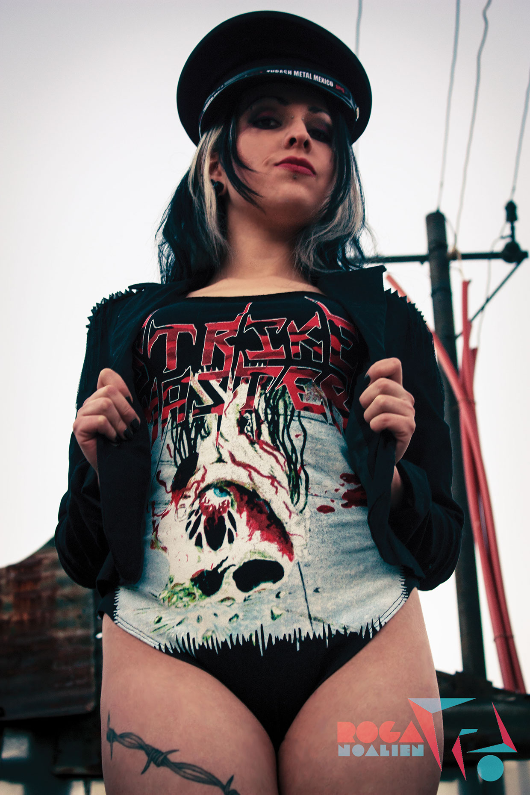

Audio
Las canciones fueron creadas con amigos para los festivales de la canción del Tecnológico de Monterrey Campus Morelia y también para la banda de Rock en la que formaba parte (atSky). Todas están en calidad demo y fueron grabadas de forma casera.
Pistolas de Madera
Hey - atSky
Nubes de Cristal - atSky
Improvisación en G#m - backtrack descargado de internet
Video
Random fue creado a través de una maquina de percusiones aleatoria hecha con arduino y loops. El otro vídeo es un montaje de una presentación de la banda Hassen (RIP) tocando en vivo en Morelia con una de sus canciones.
Ilustración, Diseño y Fotografía
Proyectos hechos en clase mientras estudiaba, como proyectos propios alternos y como experimentos de diseño e ilustración.
